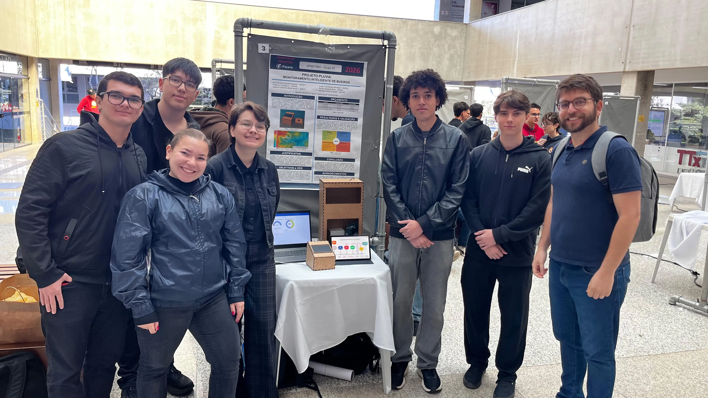
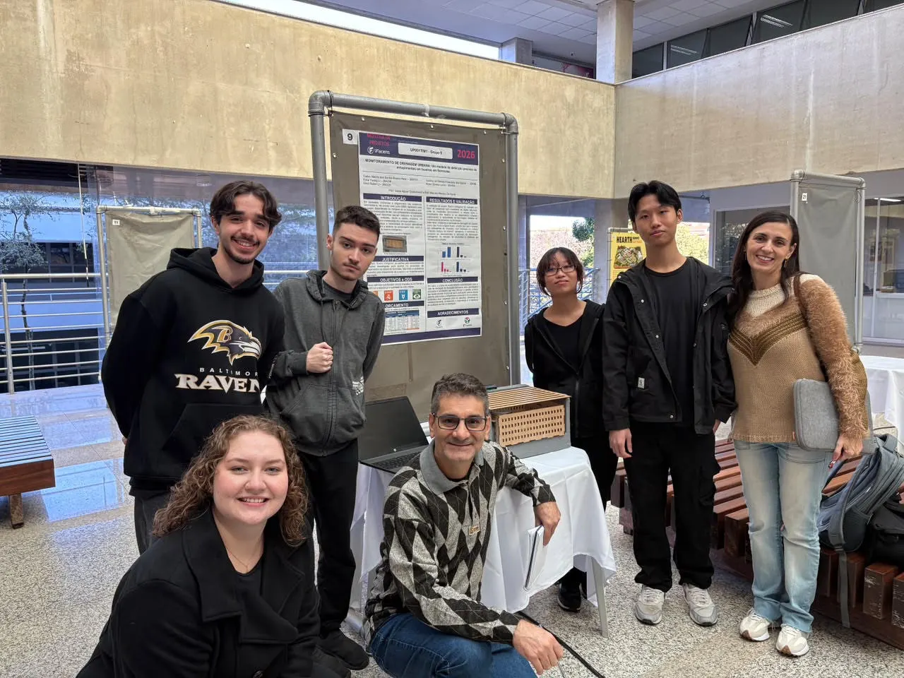

Projetos da UPX UniFacens
Projeto Pluvia

O Projeto Pluvia antecipa o alagamento antes da chuva chegar.
Para o cidadão, ele oferece segurança e previsibilidade.
O sistema alerta quando o bueiro está obstruído e existe chance de chuva.
Para a gestão pública, o projeto reduz danos e custos causados por alagamentos.
Assim, a manutenção dos sistemas de captação pluviométrica deixa de ser corretiva e passa a ser preditiva.
Com isso, gastos emergenciais viram economia estratégica.
O resultado é menos risco e mais proteção para a mobilidade urbana.
Modelo de Drenagem Urbana para Sorocaba

O modelo de drenagem urbana proposto quer elevar a qualidade de vida da população sorocabana.
Ele reduz a frequência e a intensidade das enchentes.
Com isso, diminuem os prejuízos individuais, como a perda de casas, veículos e móveis.
Diminui também a exposição a doenças.
Os impactos coletivos também caem: danos à economia local, interrupções na mobilidade urbana,
despejamento de lixo nos rios e sobrecarga dos serviços públicos.
Assim, a solução contribui para uma cidade mais segura e preparada para os desafios climáticos.
Conheça a proposta da UPX e veja quem desenvolveu o UPX Hub.
Conheça a Usina de Projetos Experimentais - UPX
A unidade curricular UPX desenvolve competências técnicas e socioemocionais.
Ela também amplia a consciência socioambiental e a atitude empreendedora do aluno.
Isso acontece por meio de soluções para desafios reais e organizações da sociedade civil.
A UPX integra o ecossistema UniFacens e seus centros de inovação ao currículo dos cursos de graduação.
Ela também aproxima o aluno do mercado de trabalho.
Tudo isso ocorre por uma narrativa inovadora e criativa, dentro da sala de aula e no ambiente virtual de aprendizagem.
Os alunos são encorajados a compreender os desafios globais.
Eles desenvolvem projetos ligados ao tema do semestre e colaboram em equipe.
Também interagem com empresas e aprimoram suas competências técnicas e socioemocionais.
Dentre os temas abordados em cada semestre estão:
-
Cidades Inteligentes
-
Desenvolvimento Sustentável
-
Energias Renováveis
-
Mobilidade e Urbanização
-
Transformação Digital
-
Sociedade Híbrida
-
Impactos das Mudanças Climáticas
-
Empreendedorismo e Inovação Social
Saiba mais sobre a UPX e os projetos desenvolvidos pelos alunos no site oficial da UniFacens:
site oficial da UniFacens
Sobre o Grupo
O Dot Comma é um grupo de estudantes do 2º semestre de Engenharia da Computação.
O grupo é unido pelo entusiasmo por tecnologia, design e desenvolvimento de software.
O time uniu os conhecimentos de Web Design e de Usina de Projetos Experimentais (UPX) para criar o UPX Hub.
O UPX Hub nasce como uma plataforma centralizada.
Ela abriga e dá visibilidade aos trabalhos desenvolvidos ao longo da jornada acadêmica.
Mais do que um repositório, o projeto quer estimular a interação entre alunos.
Ele também facilita o compartilhamento de conhecimento.
O objetivo é transformar ideias acadêmicas em uma comunidade colaborativa.
Membros do Grupo:
-
Ana Kilciauskas
-
Erica Yuying
-
Erick Ruibin
-
Frederico Rodrigues
-
Isadora Fioravante
Perguntas frequentes sobre o UPX Hub
O que é a UPX?
UPX significa Usina de Projetos Experimentais. É uma unidade curricular da UniFacens.
Nela, os alunos criam soluções para desafios reais.
Saiba mais na seção Conheça a UPX.
Quais temas a UPX aborda?
Cada semestre tem um tema. Entre eles estão cidades inteligentes, energias renováveis,
mobilidade e urbanização, transformação digital e impactos das mudanças climáticas.
Os projetos deste site tratam de alagamentos e drenagem urbana em Sorocaba.
Quem desenvolveu o UPX Hub?
O UPX Hub foi criado pelo grupo Dot Comma.
São estudantes do 2º semestre de Engenharia da Computação da UniFacens.
Conheça os integrantes em Sobre o Grupo.
Como posso compartilhar e colaborar com o UPX Hub?
Compartilhe o site com colegas, professores e amigos.
Colabore com ideias e sugestões sobre os projetos.
Assim, mais pessoas conhecem as soluções e ajudam a transformar a cidade.
Onde encontro mais informações sobre a UniFacens?
Acesse o
site oficial da UniFacens
para conhecer os cursos e as atividades da instituição.
Compartilhe, colabore e transforme com o UPX Hub
Compartilhe os projetos desenvolvidos na UPX para que outros estudantes conheçam
soluções reais para problemas da cidade.
Colabore com ideias, críticas e sugestões, porque um projeto ganha força quando
várias pessoas contribuem.
Transforme trabalhos acadêmicos em impacto real, aproximando alunos,
professores, empresas e a comunidade de Sorocaba.
Compartilhe o UPX Hub